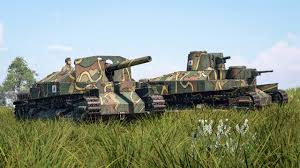

Avantages Mobilité excellente sur presque tous les chars (Type 74, Type 90, Type 10). Canons extrêmement précis, bonne stabilisation à haut tier. Munitions APFSDS performantes et pénétrantes sur les MBT modernes. Silhouettes basses et compactes → faciles à cacher et difficiles à toucher. IFV et véhicules légers modernes très efficaces (Type 89, etc.). Très bonnes thermiques à haut tier. Désavantages Blindage très faible sur presque toute la gamme, même haut tier → meurt facilement d’un seul tir. Lineups limitées à plusieurs BR, difficile de jouer plusieurs vies. Bas BR souvent fragiles et sous-armés comparés aux autres nations. Sensibles aux HE, HEAT et surpression → grande vulnérabilité aux explosions. Peu de chars “polyvalents” : excellents pour flanquer mais mauvais en frontline.
